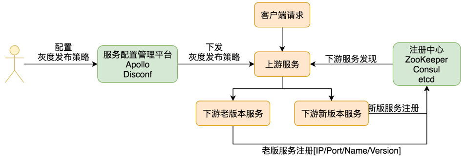
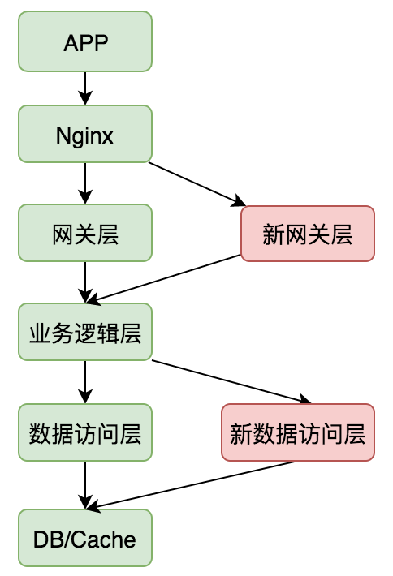
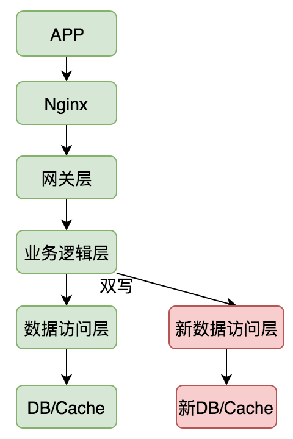

服务灰度发布设计
定义：灰度发布是互联网产品发布常用的一种方式，顾名思义，就是在黑和白之间平滑过渡的一种产品发布方式。产品发布者根据某种规则，让一部分用户继续使用原来的产品功能，另一部分用户开始逐渐启用新功能，在过渡的过程中可能还会对产品做进一步的完善，灰度发布完成后，所有的用户都将使用新的产品功能。也叫金丝雀发布，A/B Test。
目的：互联网产品需要快速迭代开发上线，又要保证质量，保证刚上线的系统，一旦出现问题可以很快控制影响面，就需要设计一套灰度发布系统。灰度发布系统的作用，可以根据配置，将用户的流量导到新上线的系统上，来快速验证新的功能，而一旦出问题，也可以马上恢复，简单的说，就是一套A/B Test系统。
灰度发布系统架构
1、上游服务接入客户端请求，根据下发的灰度配置将符合条件的请求转发到下游新旧版服务上
2、下游新旧版服务是处理客户端请求的业务服务系统
3、服务配置管理平台，可以根据不同的灰度发布转发策略给上游服务
4、注册中心，负责上下游服务的注册和发现

灰度发布系统案例
Nginx灰度网关层
1、通过Lua扩展Nginx实现灰度请求转发
2、部署本地Agent，接收服务配置管理平台下发的灰度策略，更新Nginx配置，然后热加载配置文件
网关层/业务逻辑层/数据访问层的灰度
集成配置管理平台客户端SDK，接收服务配置管理平台下发的灰度策略。
灰度发布系统场景
场景一：调用链上同时灰度多个模块
功能升级涉及多个模块变动，比如网关层和数据访问层灰度，业务逻辑层和数据存储层不变。
解决方法：对客户端请求进行tag打标记，经由新版本网关层服务处理的请求，全部打上tag T，在业务逻辑层根据Tag T进行转发，标记Tag T的请求全部转发到新版数据访问层，没有Tag T标记的请求还是由旧版数据访问层处理。

Tag T标签如何存储？可以放在RPC请求的头里面。如果是dubbo可以通过下面的方式设置：RpcContext.getContext().setAttachment("tag", "T")。
场景二：涉及数据的灰度服务
灰度服务使用到的数据库，灰度前后数据库的表字段不一致。
灰度前准备：历史数据迁移到新库。迁移方式：离线重做（摘从库导）+MQ缓存中断后的数据。参考5.7章节的数据库无缝迁移。

灰度过程同步双写，然后比较新旧数据库数据。读流量可以部分慢慢迁移。灰度完成后去除双写。
问题：如何保证双写的数据一致性？
开源灰度发布系统
Spring Cloud灰度发布神奇，Nepxion Discovery，服务注册和负载均衡的增强中间件。
客户端的灰度
APP的灰度发布。
Android：应用不发布市场，通过一定策略选取灰度用户，直接提示更新应用。灰度完成后再提交应用市场。
IOS：App Store提供灰度功能，但过程不可控。整个灰度发布机制分为7天，分别为1%，2%，5%，10%，20%，50%，100%。灰度过程遇到Bug，可以暂停发布，但已升级用户无法回退。另外在灰度阶段的任何时候，都可以直接100%发布。